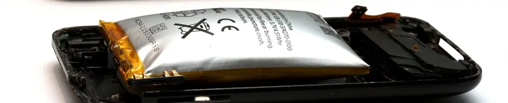

Baterai Kembung (Gembung): Penyebab, Bahaya, dan Cara Mengatasinya

Bagi para penghobi elektronik atau pengguna sistem panel surya rumahan (Solar Home System), merakit dan merawat battery pack adalah bagian dari rutinitas. Aktivitas ini, terutama yang melibatkan baterai jenis Lithium Polymer (LiPo), membutuhkan ketelitian dan pemahaman mendalam untuk memastikan performa dan keamanannya.
Salah satu masalah yang paling sering ditemui pada baterai LiPo yang sudah lama digunakan adalah performa yang menurun, ditandai dengan voltase dan arus yang drop. Ketika Anda membongkar battery pack untuk memeriksanya, Anda mungkin akan menemukan biang keladinya: satu atau beberapa sel baterai yang terlihat kembung atau menggembung.
Fenomena yang sering disebut sebagai "baterai hamil" ini bukan sekadar masalah estetika, melainkan sebuah tanda bahaya yang tidak boleh diabaikan. Mari kita bahas tuntas apa itu baterai kembung, penyebabnya, bahayanya, dan cara menanganinya dengan benar.
Apa Itu Baterai Kembung dan Mengapa Bisa Terjadi?
Baterai LiPo yang kembung disebabkan oleh penumpukan gas di dalam sel baterainya. Proses ini terjadi ketika elektrolit di dalam baterai—komponen kimia yang berfungsi menghantarkan ion—mengalami dekomposisi atau kerusakan. Reaksi kimia yang tidak semestinya ini menghasilkan gas seperti oksigen, karbon dioksida, dan gas lainnya.
Karena sel baterai LiPo terbungkus dalam kantong fleksibel (pouch), gas yang terperangkap ini tidak memiliki jalan keluar, sehingga mendorong lapisan pembungkus dan membuat baterai terlihat menggembung. Semakin banyak gas yang dihasilkan, semakin besar pula baterai akan kembung.
Penyebab Utama Baterai LiPo Menjadi Kembung
Ada beberapa faktor utama yang dapat memicu kerusakan elektrolit dan menyebabkan baterai menjadi gembung:
-
Pengisian Baterai dengan Tegangan Berlebih (Overcharging)
Mengisi daya baterai melebihi voltase maksimalnya (misalnya, di atas 4.2V per sel untuk LiPo standar) akan memberikan tekanan kimiawi yang ekstrem pada sel, mempercepat dekomposisi elektrolit, dan menghasilkan gas. -
Penggunaan Baterai hingga Benar-Benar Kosong (Over-discharging)
Menarik arus (Ampere) yang terlalu besar dari kapasitas baterai atau menggunakannya hingga voltasenya terlalu rendah (di bawah 3.0V per sel) juga menyebabkan stres kimiawi yang merusak sel baterai dari dalam. -
Penggunaan atau Pengisian Baterai dengan Arus Berlebih (Overcurrent)
Penggunaan atau baterai dengan rate arus (ampere) diatas spesifikasi baterai juga dapat mempercepat dekomposisi elektrolit, dan menghasilkan gas, yang menyebabkan baterai kembung. Hal ini biasa terjadi pada penggunaan charger fast charging pada baterai yang belum mendukung fitur ini. -
Usia dan Degradasi Alami
Setiap baterai memiliki siklus hidup. Seiring waktu dan banyaknya siklus pengisian-pengosongan, kemampuan kimia baterai akan menurun secara alami. Proses degradasi ini pada akhirnya juga akan menghasilkan gas. -
Suhu Panas atau Kerusakan Fisik
Menyimpan atau menggunakan baterai pada suhu yang terlalu panas dapat mempercepat reaksi kimia yang merugikan. Selain itu, kerusakan fisik seperti baterai tertusuk atau terjatuh juga dapat menyebabkan korsleting internal dan memicu penggembungan.
Bahaya Baterai Kembung: Risiko Kebakaran!
Ini adalah bagian terpenting yang harus Anda pahami. Baterai kembung adalah baterai yang tidak stabil dan berpotensi sangat berbahaya. Gas yang ada di dalamnya mudah terbakar. Jika pembungkusnya tertusuk atau tekanan gas menjadi terlalu tinggi, baterai bisa mengalami kebocoran, mengeluarkan asap beracun, atau bahkan terbakar hebat dan meledak.
Jangan pernah mencoba untuk menusuk baterai yang kembung dengan niat "mengeluarkan gasnya". Tindakan ini sangat berbahaya dan hampir pasti akan memicu kebakaran.
Langkah Tepat Mengatasi Baterai yang Sudah Kembung
Jika Anda menemukan ada baterai yang kembung di dalam battery pack Anda, segera lakukan langkah-langkah berikut dengan hati-hati:
- Hentikan Penggunaan: Segera matikan perangkat dan putuskan semua koneksi (input dan output) dari battery pack tersebut.
- Bongkar Rangkaian dengan Aman: Buka rangkaian battery pack Anda di tempat yang berventilasi baik dan jauh dari bahan yang mudah terbakar.
- Isolasi Baterai Bermasalah: Lepaskan baterai yang kembung dari sel baterai lain yang masih sehat. Ini penting untuk mencegah kerusakan merembet atau memicu reaksi berantai.
- Ganti dengan Baterai Baru: Ganti sel baterai yang rusak dengan yang baru dan pastikan spesifikasinya (voltase, kapasitas, C-rating) sama dengan baterai lainnya dalam satu pack.
- Buang Baterai Lama dengan Benar: Jangan membuang baterai LiPo yang rusak ke tempat sampah biasa. Bawa baterai tersebut ke fasilitas daur ulang limbah elektronik (e-waste) atau tempat pembuangan limbah B3 (Bahan Berbahaya dan Beracun) untuk ditangani secara profesional.
Video Penanganan Baterai Kembung
Kesimpulannya, baterai kembung adalah tanda akhir dari masa pakai sebuah sel baterai. Dengan mengenali penyebabnya dan menangani bahayanya secara serius, Anda dapat menjaga keamanan diri sendiri dan perangkat elektronik kesayangan Anda. Video di bawah ini akan sangat membantu dalam penanganan baterai kembung.